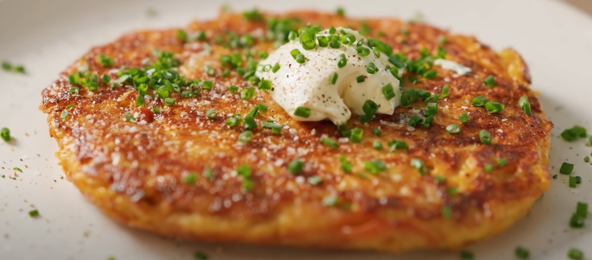

Salmon Pancake

Description
Healthy, cheap and easy to make. This is a great go to meal when you don't feel like cooking much.
Crispy sweet potato, hearty dose of eggs and salmon, complimented by a soft tangy sour cream embellishment.
Ingredients
- 1 small sweet potato
- 3 eggs
- 1/2 onion
- 1/2 carrot
- 1 can of salmon(or tuna)
- salt
- black pepper
- cayenne pepper
- olive oil
Steps
- Drain your can of salmon then add to a mixing bowl and break into little pieces
- Finely shred your sweet potato using a cheese grater
- Hand squeeze moisture out of shredded potato, then add to mixing bowl with salmon
- Chop up half an onion and add to mix
- Do the same with carrot. Make sure to chop into very thin pieces
- Spice mix with salt, pepper, and cayenne pepper to taste
- Add 3 eggs and mix everything into a paste
- Warm a pan with oil, then toss mix in spread evenly
- Heat on low for 8 or 9 minutes (until bottom is set)
- Flip then heat on low for another 5-7 minutes
- Remove from pan and add sour cream generously
- Enjoy!